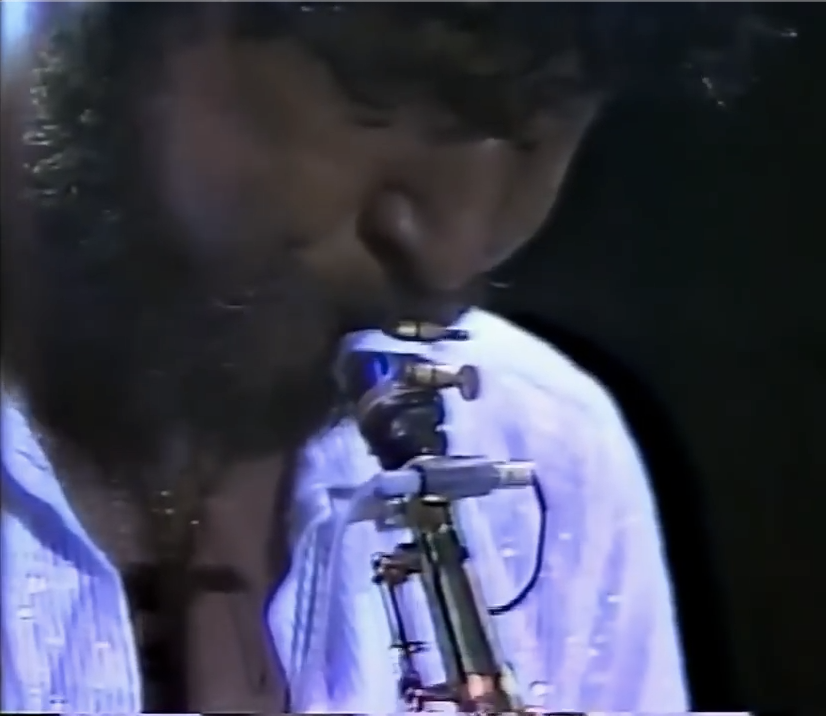
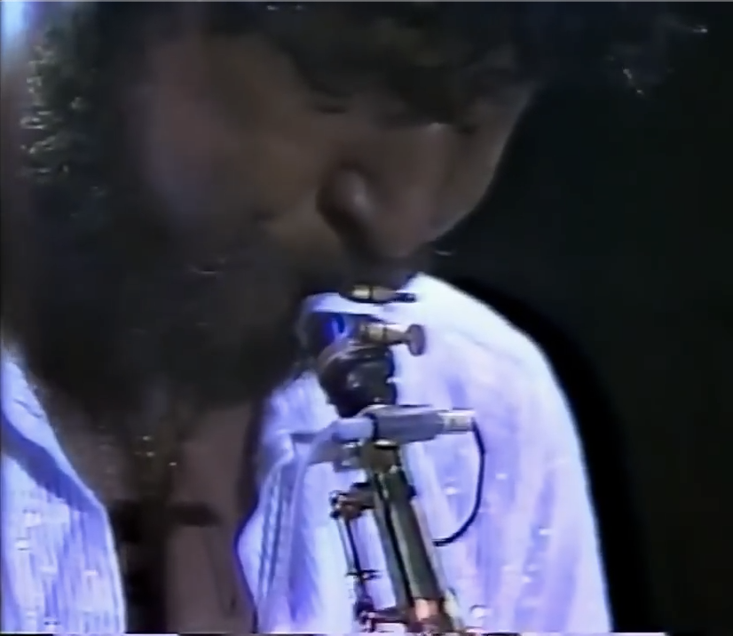

Day 65

Native Son ◆ Live At Yoron Island ◆ 1981
听这个播主的日本爵士放克混录的时候发现的 Native Son。之后发现他上传了这个Live，就听了听。不负我望，很好听！独奏很棒，旋律好听，夫复何求？我点开这个视频就一边听一耳朵，一边干别的去了，听到第一个吉他独奏的时候注意力一下被抓回来，真的很精彩。
这个播主 Xerf Xpec 传了一堆各种稀有演唱会和专辑，简直神仙。
好想用表情包哦，有时间搞一个……

Native Son ◆ Live At Yoron Island ◆ 1981
听这个播主的日本爵士放克混录的时候发现的 Native Son。之后发现他上传了这个Live，就听了听。不负我望，很好听！独奏很棒，旋律好听，夫复何求？我点开这个视频就一边听一耳朵，一边干别的去了，听到第一个吉他独奏的时候注意力一下被抓回来，真的很精彩。
这个播主 Xerf Xpec 传了一堆各种稀有演唱会和专辑，简直神仙。
好想用表情包哦，有时间搞一个……